01. L3AI creates a safer path from Web3 attention to qualified review
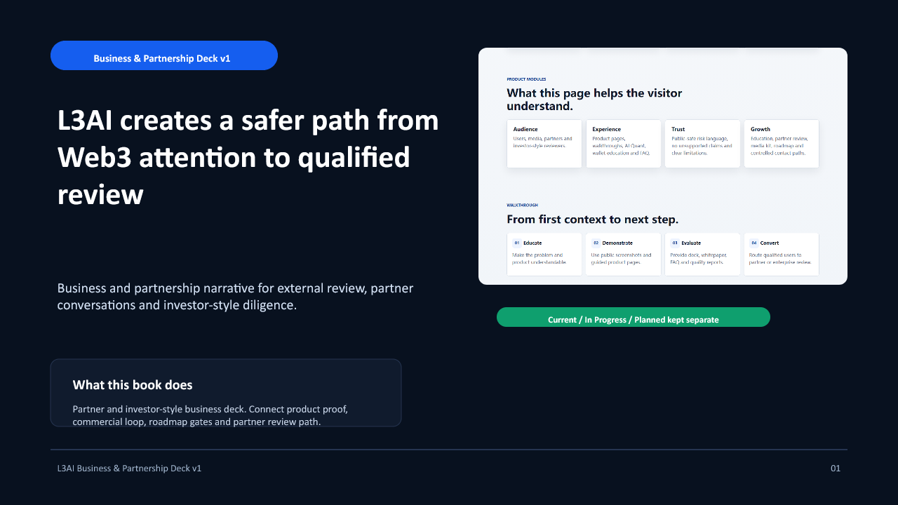
Speaker note
Open with the commercial logic: L3AI organizes attention into qualified review, not speculative promises.
02. Web3 attention is abundant. Qualified trust is scarce.
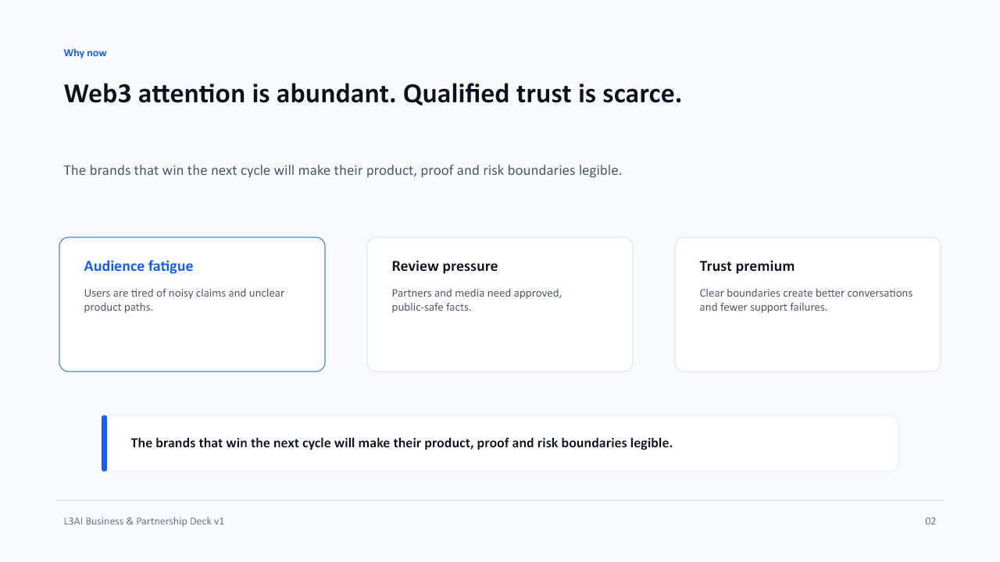
Speaker note
Keep this macro slide grounded. Do not use market-size claims that are not sourced.
03. Each audience asks a different diligence question.
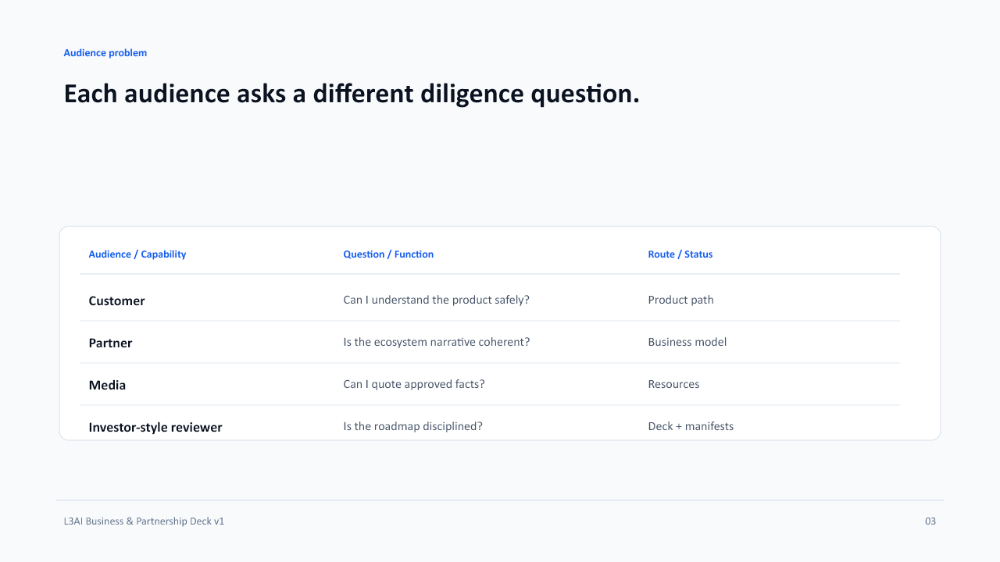
Speaker note
This gives partners a simple way to understand segmentation.
04. The product proof is already public.
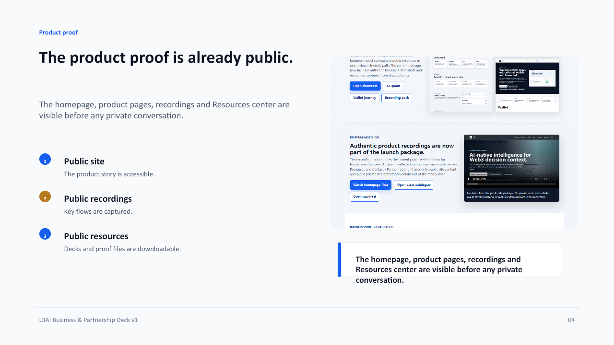
Speaker note
This is the foundation of the business story.
05. The commercial loop starts with clarity.
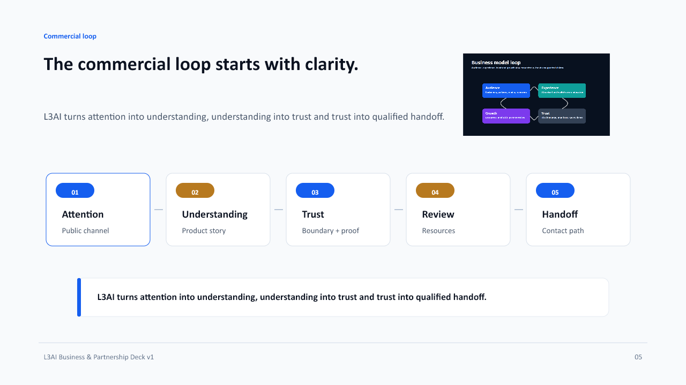
Speaker note
This is the business model without overpromising revenue.
06. Partners get a cleaner launch surface.
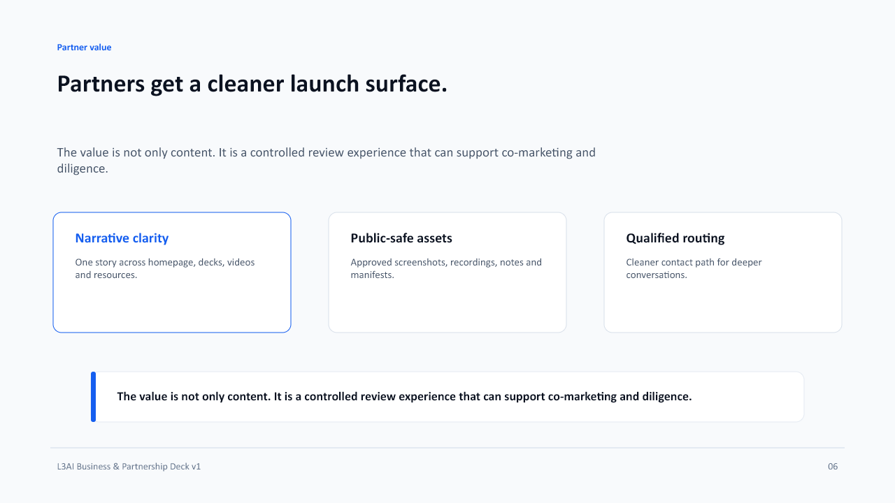
Speaker note
Partners care about repeatability and risk control.
07. Media reviewers can use approved facts without guessing.
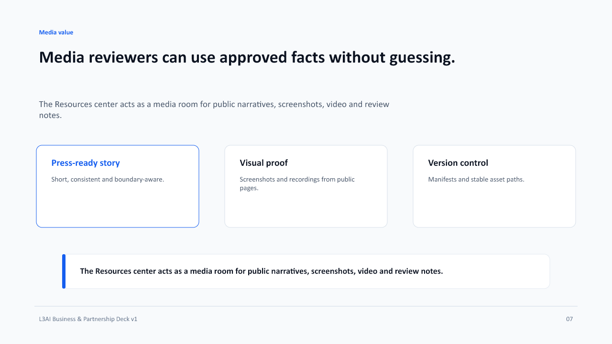
Speaker note
This slide explains why the asset library matters commercially.
08. Enterprise-style buyers need confidence before depth.
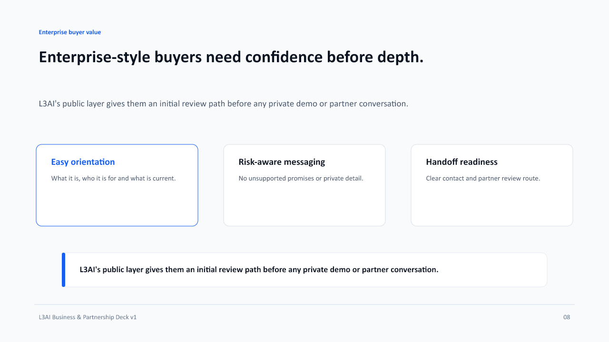
Speaker note
This is not an enterprise sales claim; it is a buyer-experience claim.
09. A community path works when education comes before conversion.
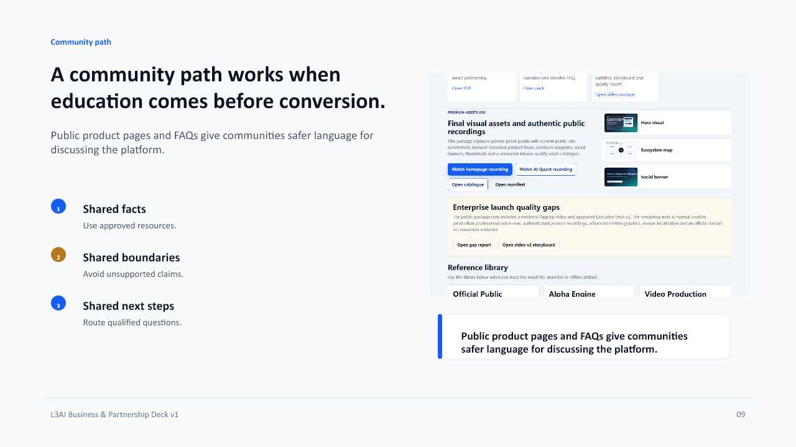
Speaker note
This supports community without claiming automated social publishing.
10. The operating system is built for preparation, not uncontrolled publishing.
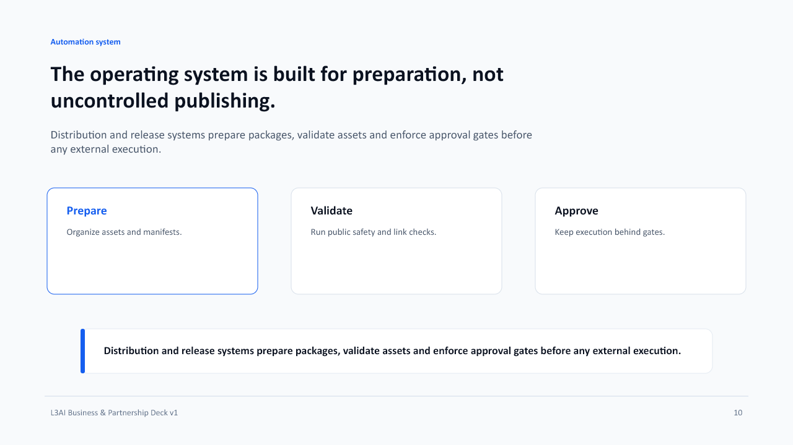
Speaker note
This reflects the current safe-mode operating model.
11. Growth only enters the story after it passes the right gate.
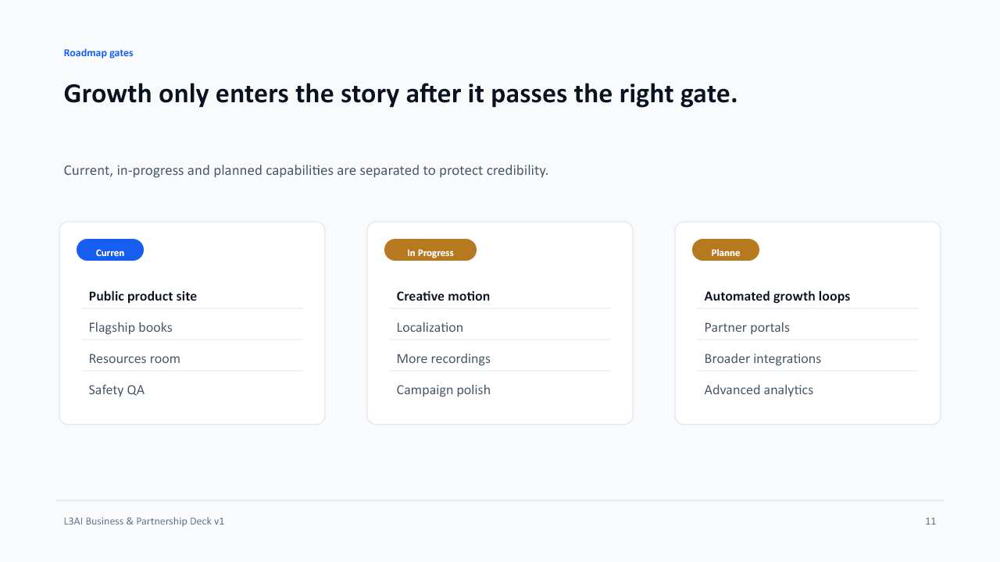
Speaker note
Roadmap gates make the business story mature.
12. Revenue categories stay evidence-gated.
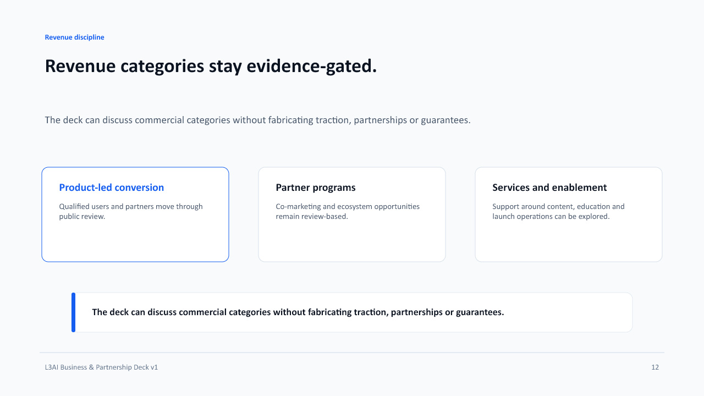
Speaker note
Do not make financial forecasts here unless separately approved and evidenced.
13. GTM starts with the public site, not a private pitch.
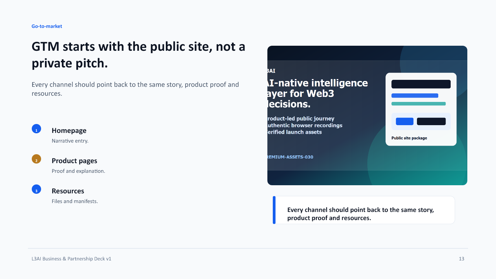
Speaker note
This explains how social, media and partner routes should converge.
14. The trust model is visible by design.
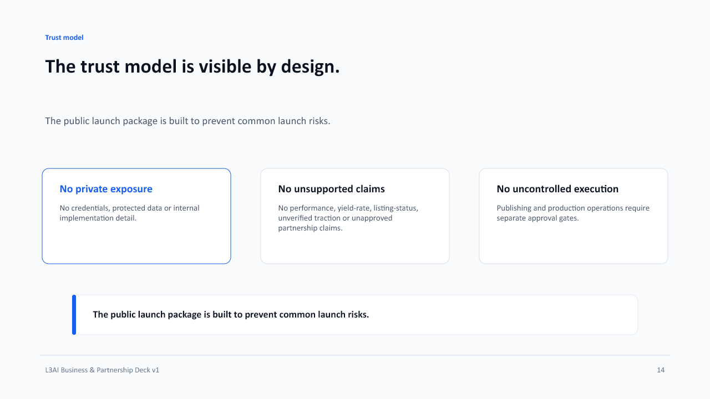
Speaker note
This is a board-level trust slide.
15. The release package now has three primary books.
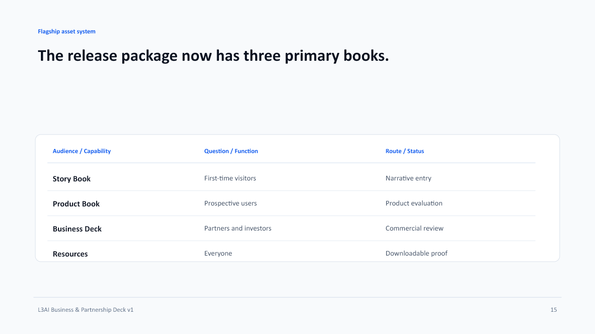
Speaker note
This is the 033 deliverable map.
16. A partner can review L3AI in a controlled sequence.
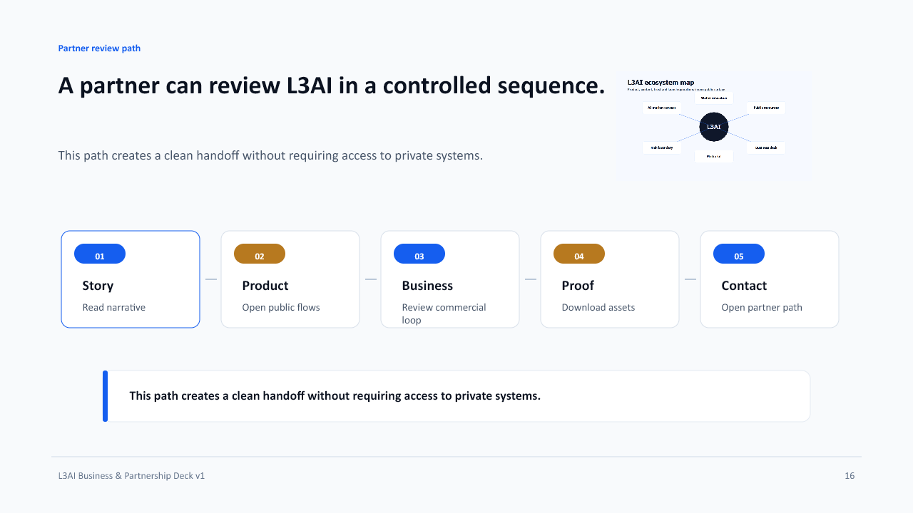
Speaker note
Use this as the practical next-step slide in partner calls.
17. What a partner should ask for next.
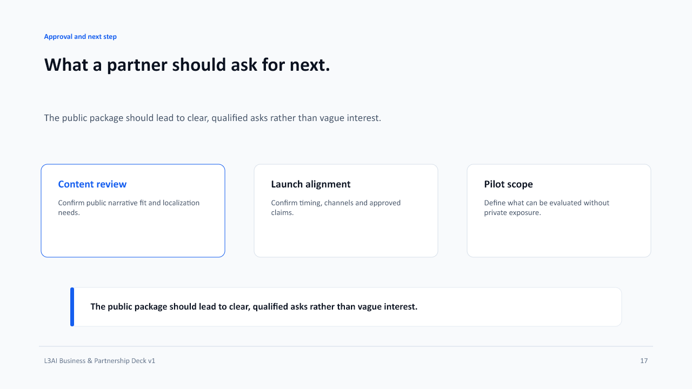
Speaker note
This keeps the conversation productive.
18. L3AI turns a noisy category into a reviewable product story.
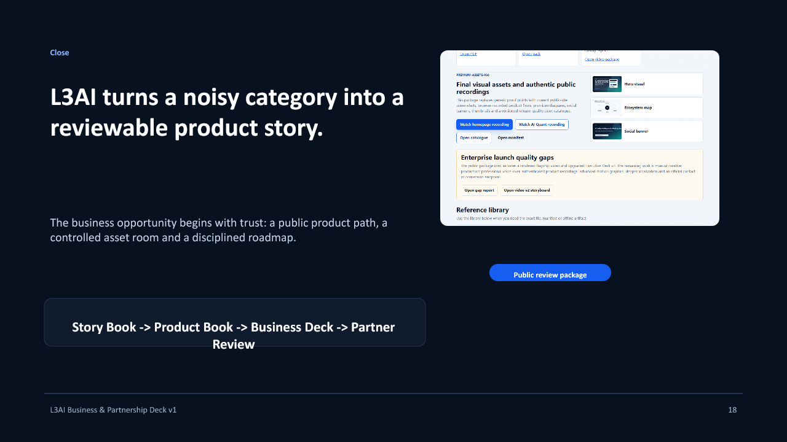
Speaker note
Close with confidence, but without hype.